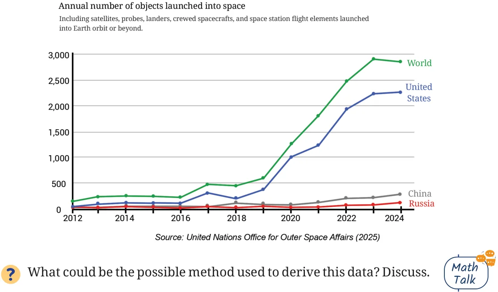

Take a look at the line graph below showing the annual number of objects launched into space.

Step 1: Identify what is given
Notice how the graph is organised, what scale is used, and what patterns the data shows.
Step 2: Infer from and interpret what is given
Analyse and interpret each of the observations you made. Once all interpretations are made, summarising/concluding statements can be made.
- •In 2024, the worldwide count is around 2800, whereas in 2023, it
was around 2900. We can say that 2023 saw the highest number of objects launched into space worldwide (assuming the trend before 2012 was decreasing).
- •The counts of the three countries don’t add up to the worldwide
count. Therefore, we can infer that the counts of other countries are not shown in this visualisation.

- •For the USA, the increase from 2022 to 2023 is more than from 2023
to 2024. We can say this by looking at how steep the line segments are - the steeper the line is, the greater the increase.
Which of the following statements are valid inferences?
- •From 2012 till 2024, the worldwide count of space object launches
increased every year.
- •USA is a major contributor in the years \(2022 - 24\), launching about
\(\frac{3}{4}\) th of the worldwide count.
- •Nepal did not launch any object in the period \(2012 - 24\).
- •The combined count of object launches by China and Russia in
2024 is about 400.
Identify two consecutive years where the worldwide count increased by 2 times or more.
Imagine the same data being shown as a clustered column graph. There would be 13 clusters - one for each year - and within each cluster, 4 columns, making a total of 52 bars! Such a graph would look crowded and difficult to read, making it hard to interpret the trends clearly. A line graph, on the other hand, is better suited for illustrating changes over time. By connecting data points with line segments, it provides a clear visual representation of trends and variations, allowing the reader to easily track how a parameter evolves across different years.